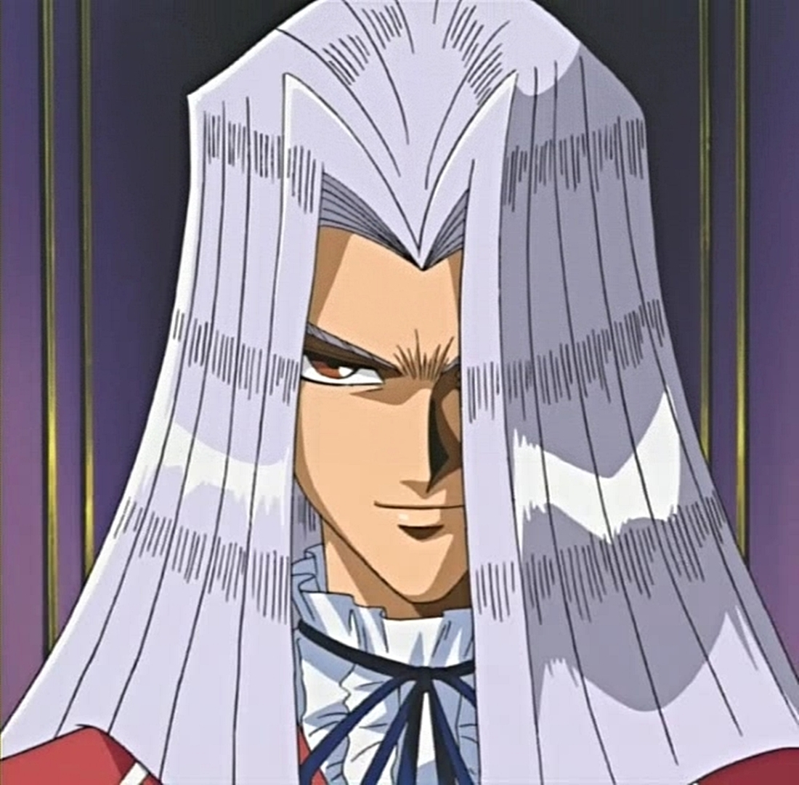
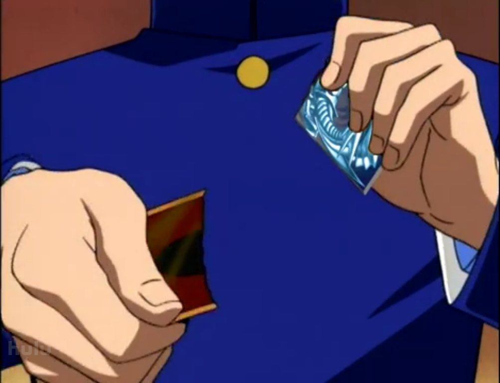
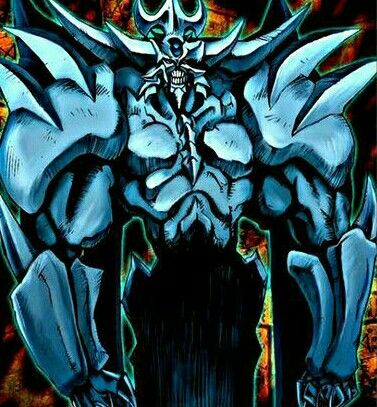
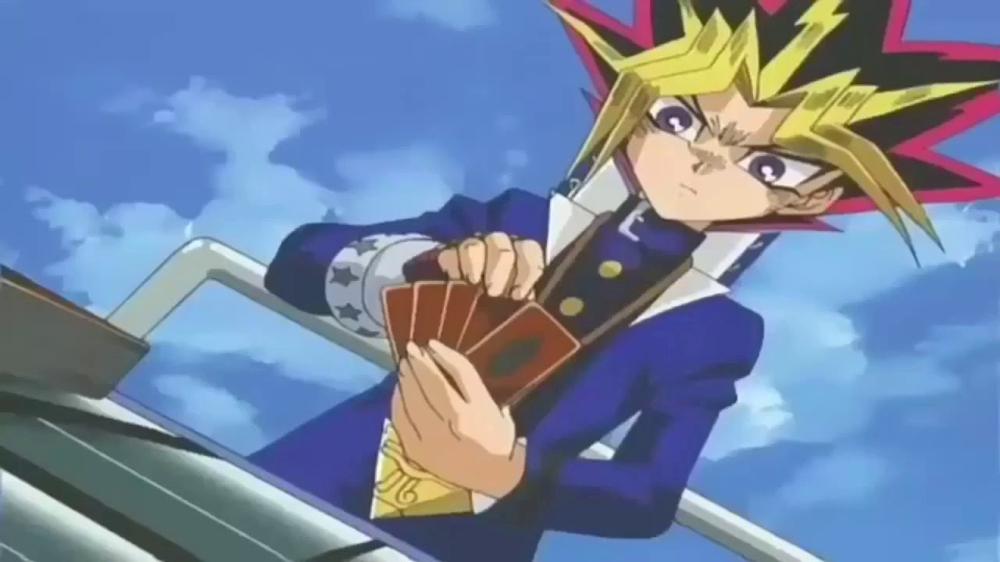
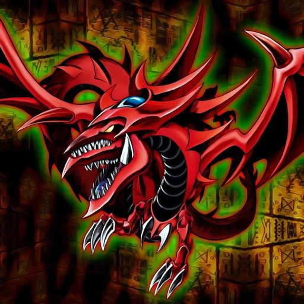
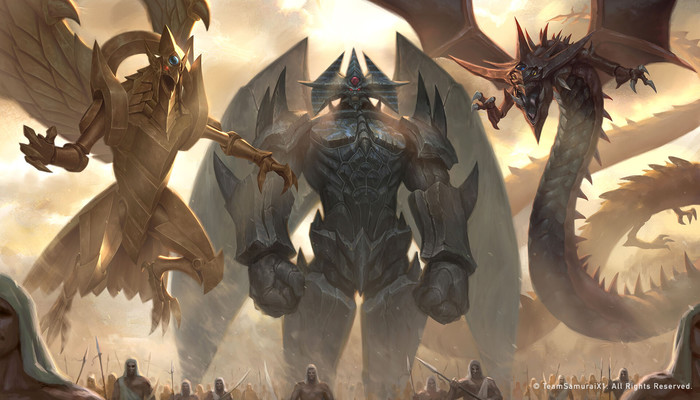
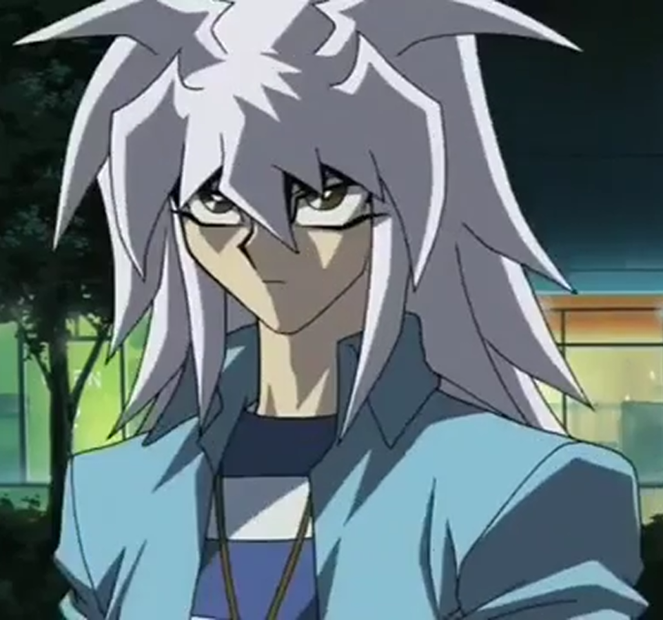

Na primeira temporada de YU-GI-OH, Yugi fala sobre sua carta predileta, qual é esta carta?
Dragão Negro de Olhos VermelhosKuriboh
Mago Negro
Guardião Celta

Olho do milênio
Chave do milênio
Colar do milênio
Qual relíquia do milênio Maximiliun Pegasus tem?
Anel do milênioOlho do milênio
Chave do milênio
Colar do milênio

Harpia
Dragão Alado de Rá
Dragão Branco de Olhos Azuis
Qual carta Seto Kaiba rasga na primeira temporada de YU-GI-OH?
ExodiaHarpia
Dragão Alado de Rá
Dragão Branco de Olhos Azuis

Quantas cartas compõe Exodia?
76
4
5

Faraó
Téa
Odion
Quem emprestou a carta do "Obelisco, o atormentador" para Kaiba?
IshizuFaraó
Téa
Odion

Contra Mako Tsunami
Contra Bandit Keith
Contra Wheevil
No reino dos duelistas Yugi ganha sua quinta estrela contra quem?
Contra MaiContra Mako Tsunami
Contra Bandit Keith
Contra Wheevil

Qual é o nome desse personagem?
TitanBandit Keith
PaniK
Marik

Qual dessas cartas Armadilhas pode destruir um monstro?
Magic JammerSkull Dice
Enchanted Javelin
Sakuretsu Armor

Qual é a carta mais poderosa de Rex Raptor?
Tyrant DragonRed-Eyes B. Dragon
Giant Rex
Gilassauro

Marik
Bakura
Strings
Quem foi que perdeu o "Slifer O Dragão dos Céus" para o Yugi?
KaibaMarik
Bakura
Strings

Slifer O Dragão dos Céus
Dragão Alado de Rá
Qual carta de deus egípcio é mais forte ?
Obelisco O AtormentadorSlifer O Dragão dos Céus
Dragão Alado de Rá

O anel do milênio
O cetro do milênio
O enigma do milênio
Qual é a relíquia do milênio do Bakura?
O colar do milênioO anel do milênio
O cetro do milênio
O enigma do milênio